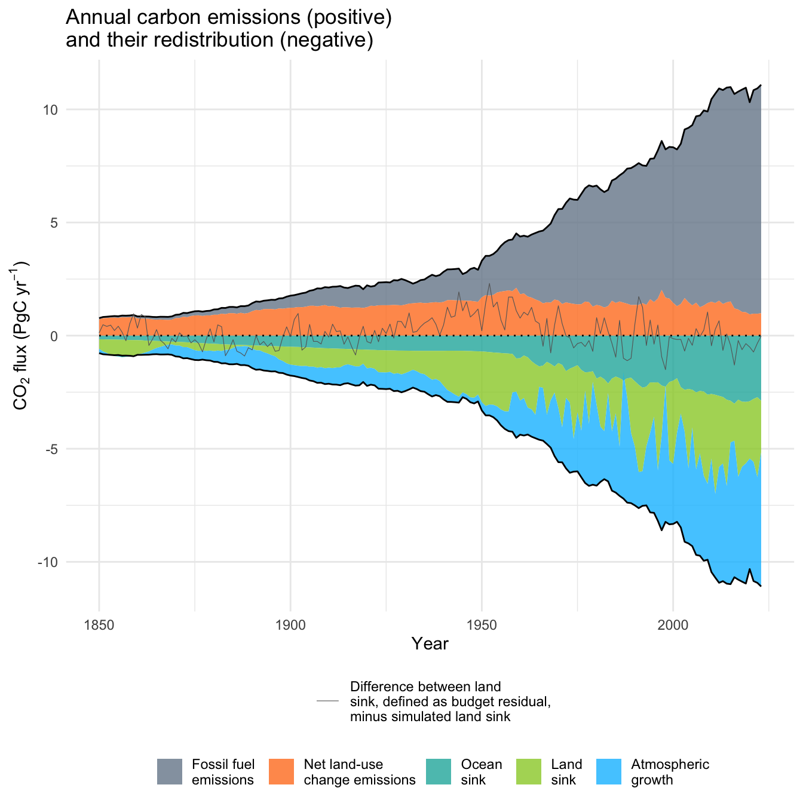
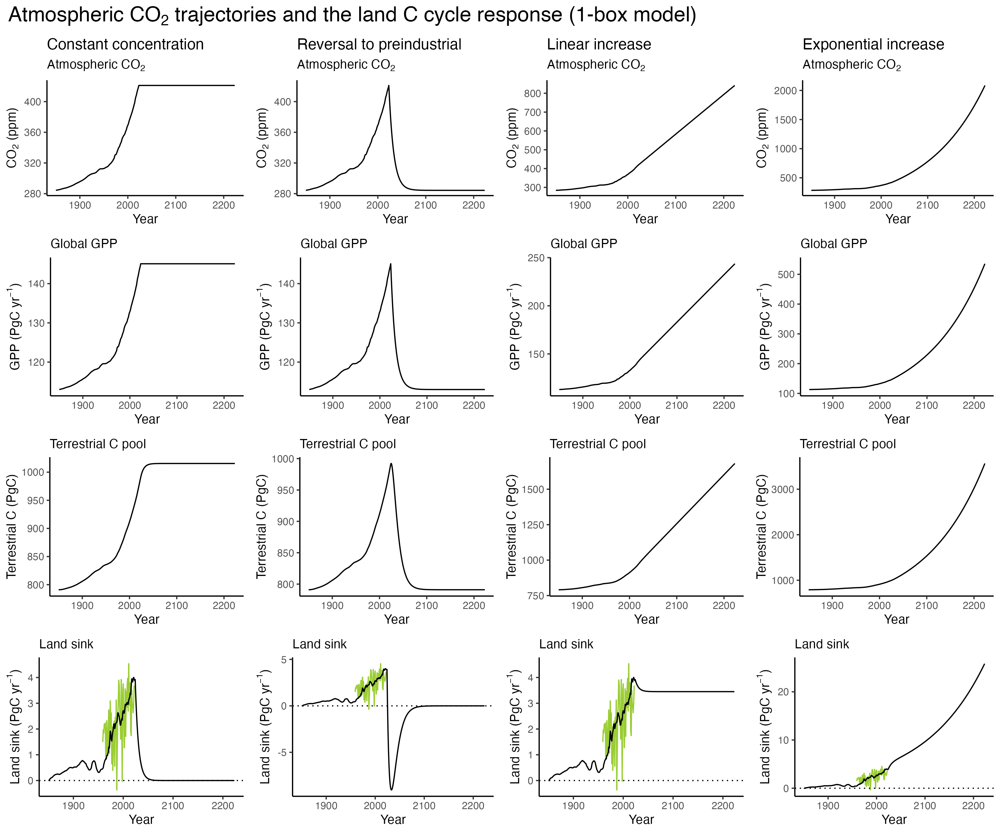

3 The global carbon budget
The principles of what drives the carbon cycle, and along with it the energy and mass flow, cannot be better explained than through the words of the late and great Richard Feynman - Nobel Prize laureate in Physics and a gifted teacher.
Energy from solar radiation is absorbed and consumed to convert atmospheric C, present in its (oxidized) gaseous form CO2, into C in carbohydrates and biomass. In other words, biomass stores solar energy. This energy can be released again, not only through combustion (fire). It also serves as an energy source through consumption of organic matter by heterotrophic organisms - animals (including humans), fungi, and bacteria. Fire and heterotrophic consumption release CO2 and thus close the atmosphere-land C cycle.
The fact that the mass of trees comes from the air, not from the soil was discovered in the late 1600 by Jan Baptista van Helmont, a Belgian chemist, physiologist, and physician. Van Helmont conducted an experiment to understand the source of plant growth. He planted a willow tree in a pot with a measured amount of soil and watered it with only rainwater. After five years, he found that the tree had gained a significant amount of biomass, while the soil weight had barely changed. Mass conservation appeared to have been violated. Has it?
Van Helmont concluded that the increase in plant mass did not come from the soil, as he initially believed, but rather from the water. Apparently, he didn’t fully grasp the role of photosynthesis for fixing gaseous carbon dioxide (CO2) from the air. The respective C is partly converted to wood, leaves, and roots, and makes up around 50% of a tree’s biomass. Anyways, his experiment laid the groundwork for later discoveries about the vital role of CO2 in plant growth. The understanding of photosynthesis and the role of CO2 in plant carbon uptake was further developed later and will be introduced in Chapter 4.
The C cycling between the atmosphere and the ocean mostly follows very different processes and dynamics than the carbon uptake and release on land. These processes and implications for CO2 trajectories are introduced in Chapter 7. The global pools of the land, ocean, and atmosphere C and the fluxes between them, and how they are changing as a result of anthropogenic fossil fuel combustion, is the topic of this chapter.
3.1 The pre-industrial carbon cycle
Carbon is an abundant element, present in all organic matter - matter produced by biota (living organisms) - and in inorganic forms in the atmosphere, the ocean, and the lithosphere. On land, the vast majority of C is present in organic forms in living biomass - mostly of vegetation (450 PgC) and soil organic matter (1700 PgC excluding permafrost). Of the latter, a particularly large stock of C is stored in permafrost soils (1200 PgC). In the ocean, the vast majority of C mass is present in inorganic forms, dissolved in ocean water, of which 900 PgC is stored in the surface ocean (the well-mixed top few hundred meters) and 37,100 PgC is stored in the deep ocean. Dissolved organic carbon in the ocean makes up 700 PgC and 1750 PgC are stored as carbonate shells in ocean floor sediments. In the pre-industrial Earth, 591 PgC were present as CO2 in the atmosphere.
Note
We will express all carbon fluxes and pools in units of mass C. For global-scale quantities, we use PgC:
1 PgC = 1 petagram C = 1015 gC = 109 tC = 1 GtC = 1 gigaton C.
C mass is sometimes also expressed in units of mass CO2. The interconversion between mass C and mass CO2 has to consider the respective molecular masses (44.01 g mol-1 for CO2 and 12.011 g mol-1 for C):
3.664 PgCO2 contains 1 PgC.
Note
The concentration of CO2 in the atmosphere is measured in parts per million (ppm), expressed as a dry-air mole fraction. Therefore, ppm is an abbreviation for micromoles per mole dry air. Since the total mass of the atmosphere is well-known and CO2 is relatively well-mixed in the troposphere within one year, the CO2 concentration can directly be converted into a total atmospheric mass of C in the form of CO2 (Ballantyne et al. 2012):
1 ppm CO2 = 2.124 PgC
Under the relatively stable climate of the pre-industrial Holocene (11,700 yr BP - 1750 CE), the size of the C pools described above remained relatively stable. To simplify, we can conceive them as constant (at steady state) under the pre-industrial Holocene climate. This is a simplification. For example, millennial-scale trends in solar radiation inputs over the seasons and latitudes (driven by slight changes in the Earth’s orbit around the sun), caused climate and vegetation changes that were substantial and in certain cases abrupt (e.g., the demise of the Green Sahara between around 6-3 ka BP (Shanahan et al. 2015)).
Even under such a pre-industrial steady state, C fluxes between the major reservoirs or pools (atmosphere, ocean, land) persisted. This is indicated in Figure 3.1 by the wide orange arrows pointing up and down between the land and the atmosphere and between the ocean and the atmosphere, as well as between different pools within the ocean. In a steady state, the C flux from the atmosphere into the land roughly equals the flux from the land to the atmosphere, and the net exchange flux is zero. Hence, the pool sizes remain constant in spite of the ongoing exchange fluxes between them. We speak of a dynamic equilibrium.
3.2 Carbon pool dynamics
The 1st-order decay model
The concept of pools and fluxes is central for describing and modelling the carbon cycle and other biogeochemical cycles in the environment. The dynamics of a pool \(C(t)\) is given by the balance of the flux of C into that pool \(I(t)\) and the flux \(O(t)\) leaving the pool - over time \(t\). In general terms, we can write the temporal change of the pool size as
\[ \frac{\mathrm{d}C(t)}{\mathrm{d}t} = I(t) - O(t) \;. \tag{3.1}\]
To simplify the expressions, we will omit \((t)\) below. But remember, that the fluxes and pools vary with time. The assumption that the out-flux \(O\) scales linearly with the size of the pool \(C\) is a good simplifying description (i.e., a model) for many processes in the environment. For example, the amount of CO2 produced by the decomposition (decay) of organic matter in the soil scales roughly linearly with the amount of organic matter that is being respired. This leads to the 1st-order decay model of pool dynamics:
\[ \frac{\mathrm{d}C}{\mathrm{d}t} = I - kC \;. \tag{3.2}\] Here, \(k\) is a decay constant and is in units of the inverse of time. In other words, it specifies the fraction of \(C\) decaying per unit time (e.g,. seconds, or years). The higher \(k\), the more rapidly the pool decays. For the case of \(I=0\), we get \(\mathrm{d}C/\mathrm{d}t = -kC\). This is a differential equation and can be understood as: What is the function that yields itself, multiplied by \(-k\), when taking its derivative with respect to time? The solution is:
\[ C(t) = C_0 \; e^{-kt} \;. \] For example, following this model, the pool of C in soil organic matter would decay exponentially if inputs (litterfall) were zero. The decay constant \(k\) determines how long it takes for it to be reduced by a certain factor. A commonly used factor is 0.5. We can calculate a half-life - the time \(t\) at which \(C(t) = 0.5\;C_0\).
In a dynamic equilibrium the change in the pool size \(C\) is by definition zero. \[ \frac{\mathrm{d}C}{\mathrm{d}t} = 0 \;. \tag{3.3}\] Combining Equation 3.2 and Equation 3.3 and re-arranging terms leads to the steady-state pool size as a function of the in-flux and the decay constant \(k\). \[ C^\ast = I/k \tag{3.4}\] Here, the asterisk denotes that \(C\) is at steady-state. This solution indicates two aspects. First, the size of the steady-state pool is proportional to the input flux. Note that we assumed that the input flux itself has no dependency on \(C\). Second, the size of the steady-state pool is inversely proportional to the decay constant. That is, the faster the decay, the smaller the steady state pool.
Equation 3.2 can also be expressed in terms of an average lifetime or turnover time \(\tau\), instead of \(k\): \[ \frac{\mathrm{d}C}{\mathrm{d}t} = I - C/\tau \;. \tag{3.5}\]
Exercise
- Consider the C pool of the intermediate and deep sea (37,100 PgC) in Figure 3.1 (bottom right). What is the turnover time of C in that pool?
- Express the steady-state pool size \(C^\ast\) as a function of the in-flux and the turnover time \(\tau\).
- Express the half-life constant as a function of \(k\).
- Do you know about other processes in nature that can be described by the 1st-order decay model?
With the information in Figure 3.1 about pool sizes and steady-state gross fluxes (parallel input and output fluxes), and our model of pool dynamics, we get an insight about how fast C is cycling in and out of different pools. \(k=I/C^\ast\) is a measure of this cycling rate. Or expressed in terms of its inverse, the turnover time \(\tau\) measures how long a C atom resides in that pool. Table 3.1 documents the turnover times for major pools of the global carbon cycle. The small C burial fluxes into sediments on land and on the ocean floor are the supply of what is eventually converted into the very large pool of C in carbonate rock (limestone). A small fraction of the C burial flux is in the form of organic matter, including dead plants, algae, and other microorganisms. Under high heat and pressure, a fraction of it contributes to the formation of hydrocarbons such as oil and gas - fossil fuels. The discrepancy in turnover times between the lithosphere C pool and the other pools indicates that C cycles on vastly different time scales and the slow geological C cycle is largely disconnected from “fast” C cycle between the atmosphere, ocean, and biosphere. Reflecting this discrepancy in time scales, the geological C cycle is not depicted in Figure 3.1 and C in fossil fuel reservoirs is treated as an external input to the fast C cycle.
| Pool | Pool size (PgC) | Input flux (PgC yr-1) | Turnover time (yr) |
|---|---|---|---|
| Atmosphere | 591 | 167.3 | 3.5 |
| Surface ocean | 900 | 329 | 2.7 |
| Deep ocean | 37,000 | (see exercise 3.1) | (see exercise 3.1) |
| Biosphere | 2150 | 113 | 19 |
| Lithosphere | 75,000,000 | 0.7 | 108 |
It should be noted that the turnover time \(\tau\) describes the average time that an atom of C resides in the respective pool. This is a simplification. In the C pool ‘terrestrial biosphere’, not every C atom has the same probability of being oxidized and respired as CO2. Hence, in reality, \(\tau\) is a wide distribution, ranging from seconds to years for non-structural carbon derived from photosynthesis, decades to centuries for C in woody biomass, and to millennia for a small fraction of soil organic matter, especially if the C is protected from oxidation, for example in water-logged soils. The turnover time should therefore be understood as a diagnostic, useful for describing the average systems dynamics in a simplified way, and subsuming multiple processes that operate at different time scales, contributing to different portions of C conversion to CO2.
The range of turnover times (e.g., within the terrestrial biosphere) arise because C is transferred between multiple pools within the biosphere and the ocean. Going to the next more detailed level of abstraction (model representation), multiple C pools in terrestrial ecosystems can be distinguished (e.g., non-structural C, leaves, roots, wood, litter, soil organic matter, microbes). Some C “cascades” through multiple pools, some is quickly respired back into the atmosphere. The interpretation that \(k\) equals the inverse of the turnover time \(\tau\), and that the turnover time equals the mean age of all C atoms in that pool, and that the mean transit time (the time it takes between an atom of C entering a pool until it exits that pool again) equals \(\tau\) is only valid for certain cases, and not for “C cascades” with fluxes between multiple pools. Requirements are that we’re dealing with a single well-mixed pool, that this pool is at steady-state, that it has been so for an infinitely long time, that \(I\) and \(k\) are constant over time, and the flux leaving the pool is a linear function of the pool size (\(O=kC\)) (Sierra et al. 2017). The transit time is the same as residence time - a term used more commonly in hydrology.
3.3 The anthropogenic perturbation
Although fossil fuels are formed by natural processes of the C cycle, their combustion can be regarded as an external input of C into the (modern) global C cycle. This is because the time scale at which the reservoir of fossil fuels is depleted (102 yr) stands in stark contrast to the time scale at which it was formed (108 yr, see turnover time of C in the lithosphere in Table 3.1). The C is added in the form of CO2 to the atmosphere from where it is taken up by the ocean through diffusion and equilibration of the ocean surface water’s CO2 partial pressure with the atmosphere’s CO2 partial pressure, and by the terrestrial biosphere through photosynthesis. It is important to note that CO2 in the atmosphere does not decay through physical or chemical processes, nor are there C sinks on land or in the ocean that remove C away from the “fast” C cycle - except the burial into sediments (see Figure 3.1 and Table 3.1). However the magnitude of the burial fluxes are dwarfed by the magnitude of C inputs through the combustion of fossil fuels and deforestation. Hence, the present-day C emissions drive an accumulation of the total amount of C cycling in the “fast” C cycle and the added C gets redistributed between the spheres. The net fluxes from the atmosphere into land ecosystems and the ocean arise because the total terrestrial and oceanic C pools are increasing as CO2 is emitted into the atmosphere and the atmospheric CO2 concentration is rising. In subsequent chapters (Chapter 4 and Chapter 7), we will learn about the processes driving the CO2 uptake by land and ocean and the dynamics of the C redistribution in the Earth system. In this chapter, we will look at the global C budget - how much C has been emitted by the combustion of fossil fuels and deforestation and how much of this C has accumulated in the atmosphere and how much has been taken up by the ocean and the terrestrial biosphere?
The global C budget can be defined for globally aggregated fluxes as the balance between emissions from fossil fuels \(E_\mathrm{FF}\) and land use change \(E_\mathrm{LUC}\) on the left side of the equation and the redistribution of C among the atmosphere, land and ocean. \(G_\mathrm{atm}\) is the atmospheric growth rate, \(S_\mathrm{ocean}\) is the net ocean C uptake (also referred to as the ocean sink) and \(S_\mathrm{land}\) is the net land C uptake (or land sink). A net flux from the atmosphere into the ocean or into land C storage is positive.
\[ E_\mathrm{FF} + E_\mathrm{LUC} = G_\mathrm{atm} + S_\mathrm{ocean} + S_\mathrm{land} \tag{3.6}\]
This terminology is adopted from the Global Carbon Budget (Friedlingstein et al. 2023) and is expressed as global annual total fluxes. The separation of \(E_\mathrm{LUC}\) and \(S_\mathrm{land}\) is not straight-forward, but can be understood in a simplified fashion as spatially separated fluxes, whereby the land sink occurs only on areas that are not affected by land use change (LUC). In reality, LUC affects the land sink which complicates a separation of the two components. This is further resolved in Chapter 14.
The values of the global carbon budget components are given in Figure 3.1 for an average across years 2010-2019, where \(S_\mathrm{ocean}\) corresponds to the ‘net ocean flux’ and \(S_\mathrm{land}\) corresponds to the the ‘net land flux’ in Figure 3.1. \(E_\mathrm{LUC}\) corresponds to ‘net land-use change’. The ‘net’ indicates that \(E_\mathrm{LUC}\) is the net effect between CO2 emissions from deforestation and C uptake by re-growing forests and afforestations. Note that the annual atmospheric growth rate is not resolved in Figure 3.1. The most recent update of the global carbon budget from Friedlingstein et al. (2023) is given in Table 3.2 as 10-year averages of annual fluxes for years 2013-2022 and cumulative fluxes for the industrial era - years 1750-2022.
| Component | Cumulative 1750-2022 | Annual 2013-2022 |
|---|---|---|
| \(E_\mathrm{FF}\) | 480 \(\pm\) 25 | 9.6 \(\pm\) 0.5 |
| \(E_\mathrm{LUC}\) | 250 \(\pm\) 75 | 1.3 \(\pm\) 0.7 |
| \(G_\mathrm{atm}\) | 300 \(\pm\) 5 | 5.2 \(\pm\) 0.02 |
| \(S_\mathrm{ocean}\) | 190 \(\pm\) 40 | 2.8 \(\pm\) 0.4 |
| \(S_\mathrm{land}\) | 245 \(\pm\) 60 | 3.3 \(\pm\) 0.8 |
Estimates of each global carbon budget compenent are largely independent from each other and rely on different types of observations, data, and methods. \(E_\mathrm{FF}\) estimates are based on energy statistics and cement production data. Values reported by Friedlingstein et al. (2023) include the cement carbonation sink. Without that sink, the value of \(E_\mathrm{FF}\) for 2022 would be about 0.2 PgC yr-1 higher. \(E_\mathrm{LUC}\) estimates are based on land-use and land-use change data from national statistics and forest carbon “bookkeeping models”. These models use information about vegetation C stocks, forest C re-growth curves, and the fate of C after deforestation and harvesting (e.g., wood products lifetime). Atmospheric CO2 concentration, and hence the accumulation of C in the atmosphere, is measured directly and bears the least uncertainty among all carbon budget components. The ocean sink is estimated from global ocean CO2 uptake models and observation-based products. In Friedlingstein et al. (2023), the land sink is estimated from dynamic global vegetation models.
Advances in observations and modelling in recent years now enable the land and ocean sink to be estimated in a “bottom-up fashion” - using models of land and ocean C uptake. Since every component of the global carbon budget is thereby estimated independently, a budget imbalance term \(B_\mathrm{IM}\) can be defined. A value of zero indicates that models of the land and ocean C uptake exactly match the (better known) emission terms minus the atmospheric growth rate. \[ B_\mathrm{IM} = E_\mathrm{FF} + E_\mathrm{LUC} - (G_\mathrm{atm} + S_\mathrm{ocean} + S_\mathrm{land}) \tag{3.7}\]
Today, the global carbon budget is well specified thanks to reliable estimates of its individual components. The budget imbalance is only a fraction of the total emissions. Until recently, “bottom-up” estimates of \(S_\mathrm{land}\) by land C cycle models were deemed insufficient for providing reliable estimates. Instead, \(S_\mathrm{land}\) was estimated as the budget residual by neglecting \(B_\mathrm{IM}\) and rearranging terms in Equation 3.7 to solve for \(S_\mathrm{land}\). In fact, when the IPCC First Assessment Report was published in 1990, the existence of C sink on land was not known and it was treated as the budget imbalance and referred to as the ‘missing sink’. It was stated that “there are possible processes on land which could account for the missing CO2 (but it has not been possible to verify them)”.
It was only later that the existence of a terrestrial C sink could be more firmly established and quantified thanks to parallel measurements of the atmospheric O2 and CO2 concentrations (Keeling, Piper, and Heimann 1996). (In fact, the ratio O2/N2 is measured to avoid the much larger measurement uncertainty in absolute O2 measurements). The ratios of O2:CO2 are known from the stoichiometric molecular formulae for photosynthesis (O2:CO2 = 1.1), fossil fuel combustion (O2:CO2 = 1.4) and ocean uptake (O2:CO2 = 0). An ocean O2 source from marine organisms has to be factored in. Given the total C emissions from fossil fuel combustion, the net land C balance can thus be calculated and the calculation visualized geometrically (Figure 3.2). Note that net emissions from land use change are not considered and the what is termed the “Sland” in Figure 3.2 is actually the net \((S_\mathrm{land} - E_\mathrm{LUC})\) in Equation 3.6.
In a mathematical sense, the constraint from atmospheric oxygen can be understood as a second equation, necessary for solving for two unknowns \(S_\mathrm{land}\) and \(S_\mathrm{ocean}\). Their sum must equal (well-known) emissions \(E_\mathrm{FF} + E_\mathrm{LUC}\) minus the atmospheric growth rate \(G_\mathrm{atm}\). This yields only one equation - that for the C budget (Equation 3.6). The oxygen budget provides a second equation and thus enables solving for two unknowns. In a similar fashion, the isotopic composition of C (the ratio of 13C:12C) also provides a second equation (Joos and Bruno 1998). The history of 13C can be measured on ice cores and \((S_\mathrm{land} - E_\mathrm{LUC})\) can thus be reconstructed for the past (Figure 3.3). Note that in order to separate \(S_\mathrm{land}\) from the budget, independent estimates of \(E_\mathrm{LUC}\) are required.
We can adopt the perspective of C cycle science stated in earlier publications. Falkowski et al. (2000) wrote: “Direct determination of changes in terrestrial carbon storage has proven extremely difficult. Rather, the contribution of terrestrial ecosystems to carbon storage is inferred from changes in the concentrations of atmospheric gases, especially CO2 and O2 […].” In that sense, let’s consider the land sink to be the budget residual and assume that the ocean sink estimate is accurate (indeed, its uncertainty is only about half the uncertainty in bottom-up land sink estimates, Table 3.2). Visually contrasting emissions and their redistribution reveals an interesting pattern (Figure 3.4). The substantial year-to-year (interannual) variations in the land sink are almost exclusively responsible for interannual variations in the atmospheric growth rate. Total emissions and the ocean sink exhibit little interannual variation. By definition, the sum of the atmospheric growth rate, land and ocean sink is equal to the sum of emissions from fossil fuels and land use change.
Exercise
- Use Equation 3.7 to express the land sink as the budget residual (assuming \(B_\mathrm{IM} = 0\)).
Code
library(readr)
library(here)
library(dplyr)
library(tidyr)
library(ggplot2)
# Data from Friedlingstein et al. 2023. Downloaded excel file 'Global
# Carbon Budget v2023' from
# https://globalcarbonbudgetdata.org/latest-data.html
# Saved tab Global Carbon Budget as a CSV file.
# Reading this CSV here.
df <- read_csv(here("data/Global_Carbon_Budget_2023v1.0_tabGlobalCarbonBudget.csv"))
# (Re-) definitions
df <- df |>
# Include the carbonation sink in the fossil fuel emissions
mutate(e_ff = e_ff - s_cement) |>
# Land sink defined as the budget residual
mutate(s_res = e_ff + e_luc - g_atm - s_ocean)
# Create the budget plot
df |>
ggplot() +
geom_ribbon(
aes(
x = year,
ymax = e_ff + e_luc,
ymin = e_luc,
fill = "ff"),
alpha = 0.8
) +
geom_ribbon(
aes(
x = year,
ymax = e_luc,
ymin = 0,
fill = "luc"),
alpha = 0.8
) +
geom_ribbon(
aes(
x = year,
ymax = 0,
ymin = -s_ocean,
fill = "ocean"),
alpha = 0.8
) +
geom_ribbon(
aes(
x = year,
ymax = -s_ocean,
ymin = -(s_ocean + s_res),
fill = "land"),
alpha = 0.8
) +
geom_ribbon(
aes(
x = year,
ymax = -(s_ocean + s_res),
ymin = -(s_ocean + s_res + g_atm),
fill = "atm"),
alpha = 0.8) +
geom_line(
aes(
x = year,
y = 0),
linetype = "dotted") +
geom_line(
aes(
x = year,
y = e_ff + e_luc)
) +
geom_line(
aes(
x = year,
y = -(s_ocean + s_res + g_atm)
)
) +
geom_line(
aes(
x = year,
y = imbalance,
color = "imbalance"),
linewidth = 0.2
) +
labs(x = "Year",
y = expression(paste("CO"[2], " flux (PgC yr"^-1, ")")),
title = "Annual carbon emissions (positive) \nand their redistribution (negative)"
) +
scale_fill_manual(
name = "",
breaks = c("ff", "luc", "ocean", "land", "atm"),
values = c("ff" = "lightslategrey",
"luc" = "chocolate1",
"ocean" = "lightseagreen",
"land" = "yellowgreen",
"atm" = "deepskyblue1"
),
labels = c("Fossil fuel \nemissions",
"Net land-use \nchange emissions",
"Ocean \nsink",
"Land \nsink",
"Atmospheric \ngrowth"
)
) +
scale_color_manual(
name = "",
breaks = "imbalance",
values = c("imbalance" = "grey40"),
labels = "Budget imbalance"
) +
theme_minimal() +
theme(
legend.position="bottom",
legend.box = "vertical"
)
ggsave(here::here("book/images/globalcarbonbudget.png"), width = 6, height = 6)

3.4 Understanding the land C sink
3.4.1 Processes
As challenging as it was to locate the “missing C sink” in the terrestrial biosphere in the 1990s (see above), it remains a great challenge to locate the C sink within the terrestrial biosphere and attribute it to processes. Three processes are considered to be particularly influential for the terrestrial C balance, and they each affect ecosystems’ C balances in different regions across the globe - land use change, the relief of temperature limitations on photosynthesis and growth, and the CO2 fertilization effect.
The land C balance from land use change is the net of a flux to the atmosphere due to deforestation and a flux from the atmosphere to the land biosphere due to regrowth after deforestation. Land use change trends are very different across regions globally. While large C losses due to land use change are currently occurring in the tropics, northern extra-tropical regions generally gain C as forests are recovering from more intense wood harvesting in the past - prior the the mid-20th century. Chapter 14 delves deeper into the role of land use change on the carbon cycle and climate. The net C flux from land use change is accounted for in the global carbon budget by the term \(E_\mathrm{LUC}\) (Equation 3.6) and should reflect also effects by C accumulation in recovering forests. However, past land use changes are uncertain and the impact of pre-1950 wood harvesting in temperate regions may be underestimated by models that supply estimates for \(E_\mathrm{LUC}\). \(S_\mathrm{land}\), when defined as the budget residual, may thus be driven by the C sink in recovering forests. A recent estimate suggests that about a quarter of the land sink, or 1.3 PgC yr-1, is due to recovery from past forest disturbances (fire, wind, and wood harvesting) (Pugh et al. 2019).
Warming trends due to anthropogenic climate change are relieving temperature limitations on photosynthesis and tree growth, enabling an extension of the growing season (Ruehr et al. 2023), and an expansion of forest areas and vegetation greenness in high northern latitudes - as sensed from space (T. F. Keenan and Riley 2018). The associated land C sink, as the one driven by forest recovery from past land use change, is located in the northern extra-tropics.
Rising atmospheric CO2 stimulates leaf-level photosynthetic rates. The additional C assimilated likely drives increases in ecosystem C storage. However, a multitude of processes and ecosystem feedbacks are involved and affect the link between the leaf-level CO2-fertilization of photosynthesis and ecosystem-level C storage (nutrient limitation, tree longevity reduction due to accelerated growth, soil organic C loss due to plant-soil interactions). Free-Air-CO2-Experiments, where plots of outdoor growing vegetation are exposed to elevated CO2 during multiple years indicate a stimulation of photosynthesis and growth, but evidence for gains in biomass and soil C stocks is mixed. Yet, C gains in mature forest growth, biomass, and ecosystem C stocks are documented and, particularly in the tropics, CO2-fertilization appears to be the main driver of this trend. This is consistent with Dynamic Global Vegetation Models that attribute about 60-85% of the total land sink to CO2-fertilization (Schimel, Stephens, and Fisher 2015; Trevor F. Keenan et al. 2016). Published review studies (Ruehr et al. 2023; Walker et al. 2021) provide a more detailed account of the complex role of CO2-fertilization in driving the land C sink.
Theory suggests that the CO2 effect on photosynthesis should be higher under warm than under cold temperatures. Therefore, a CO2-driven land sink should be strongest in the tropics. As mentioned above, a C sink that is driven predominantly by either growing season extensions and cold limitation reliefs or by recovery from past land use change would be located mainly in the northern extra-tropics. How to discriminate between these drivers and their associated C sink regions? Once more, atmospheric CO2 measurements provide a constraint. While the total terrestrial C sink is relatively well-constrained through the global carbon budget, contributions from the tropics (and southern hemisphere) vs. the northern extra-tropics requires an additional constraint. Atmospheric CO2 measurements, in combination with known CO2 sources and their location and with atmospheric transport fields (atmospheric inversions) enable a split of the global land C sink into contribution from the two regions, while their sum is constrained by the global carbon budget. This approach is visualized in Figure 3.5. The combination of the two constraints indicates that model simulations where the CO2-fertilization effect was “turned off” tend to be outside the range of plausible combinations of tropical and northern-extratropical land C sinks. This indicates the importance of a strong CO2-fertilization-driven C sink in the tropics. Hence, the hypothesis that the land C sink is driven exclusively by forest recovery from past land use and the extension of the growing season in cold-limited regions of the northern extra-tropics is not compatible with the C budget and the inter-hemispheric split of land C uptake inferred from atmospheric inversions.
The processes for understanding the oceanic C sink will be introduced in Chapter 7.
3.4.2 Interannual variability
As highlighted above, pointing to Figure 3.4, the magnitude of the land C sink varies strongly between years. Semi-arid regions, where dry conditions during a substantial part of the year limit photosynthesis and where drought-related disturbances strongly influence ecosystem C balances, are contributing most strongly to the signal apparent from the global C budget (Ahlström et al. 2015). Semi-arid regions largely align with temperate and tropical grasslands, savannahs, and shrubland biomes (Figure 2.2). Years with a small land sink and a high atmospheric CO2 growth rate are dry years, associated with low global-scale terrestrial water storage (Humphrey et al. 2018), and are associated with warm temperature anomalies in the tropics (Cox et al. 2013). This indicates two important points. First, C storage in the terrestrial biosphere is highly susceptible to climate variations. Second, water availability has a strong control on the terrestrial carbon cycle. We will learn more about how the water and the carbon cycles are coupled in Chapter 8 and how the influence of water availability on vegetation varies across the globe in Chapter 9.
CO2 trajectories and the land C cycle response
Equation 3.2 describes the dynamics of land C storage based on a 1-box model. Let’s apply this model for understanding the link between changes in \(I\) and the land C balance (\(\mathrm{d}C/\mathrm{d}t\)). We explore different future trajectories of atmospheric CO2, branching off from its observed history, and simulate the resulting total terrestrial photosynthetic CO2 uptake (also referred to as the gross primary productivity, see also Chapter 4), the terrestrial C pool, and the land sink (i.e., the temporal change in the terrestrial C pool).
We make the (strong) assumption that the land C balance dynamics are exclusively driven by the CO2-fertilization effect on photosynthetic C uptake, represented by \(I\), while the turnover rate (\(\tau\)) remains constant. The CO2-fertilization effect on a variable \(x\) is commonly measured as the sensitivity factor \(\beta\): \[ \beta = \frac{\ln (x/x_0)}{\ln (c_a/c_{a,0})} \tag{3.8}\] Here, \(c_a\) is the atmospheric CO2 concentration (ambient CO2). For ratios of \(x/x_0\) and \(c_a/c_{a,0}\) approaching 1, Equation 3.8 is equivalent to the ratio of the relative change in \(x\) over the relative change in CO2. \[ \beta \approx \frac{\Delta x/x}{\Delta c_a/c_a}\;, \tag{3.9}\] where \(\Delta x = x - x_0\). The sensitivity of the total terrestrial photosynthetic CO2 uptake to atmospheric CO2 has been estimated by T. F. Keenan et al. (2023) as \(\beta = 0.59 \pm 0.16\). With this, we can model \(I\) as a function of \(c_a\) using Equation 3.9.
The 1-box model can be implemented numerically by discretization in time (i.e., considering time steps \(\Delta t\)). To simulate the terrestrial C pool over time (\(C(t)\)), Equation 3.2 can thus be written as \[ C(t+\Delta t) = C(t) + I(t) - \tau^{-1}C(t) \]
We further assume that \(C(t)\) was at steady-state in year 1850 - the first year of the CO2 time series used here. \(\tau\) could be estimated by using values of terrestrial C pools (sum of vegetation C and soil C) and the gross photosynthesis flux from Figure 3.1 (\(\tau = (450\; \mathrm{GtC} + 1700\; \mathrm{GtC})/113\; \mathrm{GtC\;yr}^{-1} = 19.0 \; \mathrm{yr}\)). However, the resulting land C sink would be strongly overestimated when compared to the residual sink \(S_\mathrm{land}\) from the Global Carbon Budget. When choosing \(\tau = 9 \; \mathrm{yr}\), a better fit between the 1-box model-derived land sink and the observed land sink emerges. This could indicate that CO2-fertilization drives additional C storage that is more short lived than on average in vegetation and soil biomass. It probably also indicates that not all of the C assimilated by photosynthesis stays in the system for more than a few minutes to weeks. A substantial fraction of that C is respired by plants (autotrophic respiration, see also Chapter 4) before it is synthesized into longer-lived plant tissue biomass. The resulting evolution(s) of the land C cycle are illustrated in Figure 3.7.

Exercise
- Express \(I\) as a function of \(c_a\), using the definition of \(\beta\) from Equation 3.9, and using \(c_{a,0}\) and \(I_0\).
- Calculate \(I(c_a)\) for \(c_a = 400\) ppm and \(I_0\) as the pre-industrial value of total terrestrial gross photosynthesis from Figure 3.1 and using the value of \(\beta\) (mean) from T. F. Keenan et al. (2023).
- It is important to note that the land C sink trajectories are strongly dependent on whether the dominating process driving it is CO2 fertilization or forest recovery from past disturbance (or other drivers). The temporal course of ecosystem C pools after a disturbance is schematically illustrated in Figure 3.8. Sketch the resulting land C sink for the different CO2 trajectories of Figure 3.7 if the sink was exclusively driven by forest recovery.